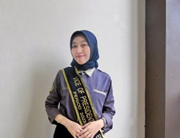
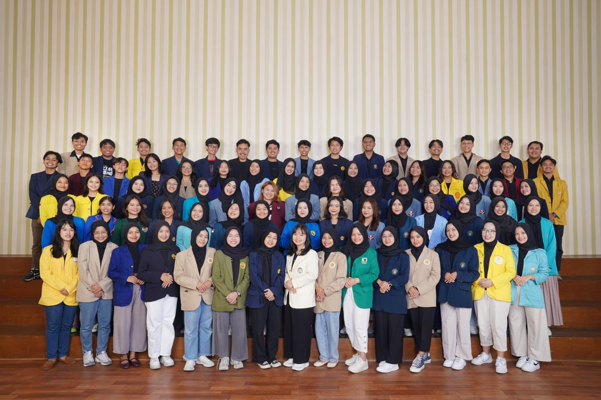
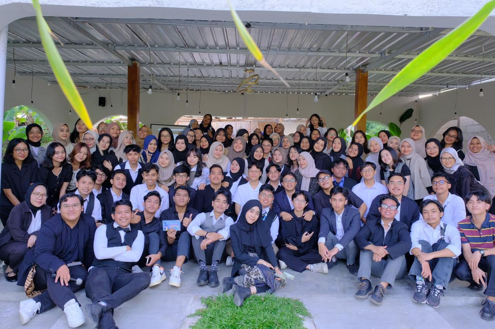
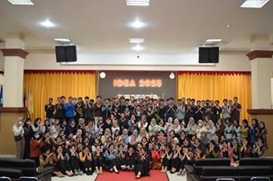
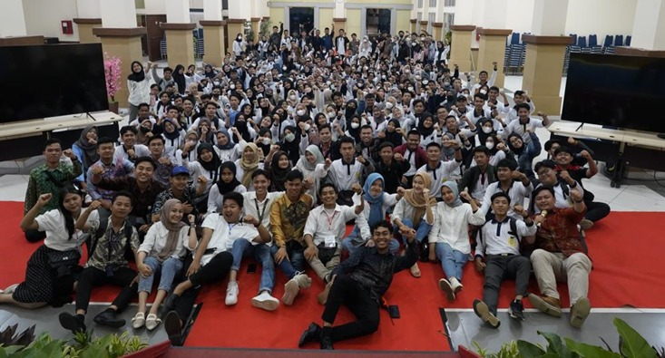

	<!DOCTYPE html>
	<html lang="zxx" class="no-js">
	<head>
		<!-- Mobile Specific Meta -->
		<meta name="viewport" content="width=device-width, initial-scale=1, shrink-to-fit=no">
		<!-- Favicon-->
		<link rel="shortcut icon" href="img/favicon.ICO">
		<!-- Author Meta -->
		<meta name="author" content="CodePixar">
		<!-- Meta Description -->
		<meta name="description" content="">
		<!-- Meta Keyword -->
		<meta name="keywords" content="">
		<!-- meta character set -->
		<meta charset="UTF-8">
		<!-- Site Title -->
		<title>Portofolio Anisa Hashilla</title>

		<link href="https://fonts.googleapis.com/css?family=Poppins:100,200,400,300,500,600,700" rel="stylesheet"> 
			<!--
			CSS
			============================================= -->
			<link rel="stylesheet" href="css/linearicons.css">
			<link rel="stylesheet" href="css/owl.carousel.css">
			<link rel="stylesheet" href="css/font-awesome.min.css">
			<link rel="stylesheet" href="css/nice-select.css">			
			<link rel="stylesheet" href="css/magnific-popup.css">
			<link rel="stylesheet" href="css/bootstrap.css">
			<link rel="stylesheet" href="css/main.css">
		</head>
		<body>

			<!-- Start Header Area -->
			<header class="default-header">
				<nav class="navbar navbar-expand-lg  navbar-light">
					<div class="container">
						  <a class="navbar-brand" href="index.html">
						
						  </a>
						  <button class="navbar-toggler" type="button" data-toggle="collapse" data-target="#navbarSupportedContent" aria-controls="navbarSupportedContent" aria-expanded="false" aria-label="Toggle navigation">
						    <span class="navbar-toggler-icon"></span>
						  </button>

						  <div class="collapse navbar-collapse justify-content-end align-items-center" id="navbarSupportedContent">
						    <ul class="navbar-nav">
								<li><a href="index.html#home">Home</a></li>
								<li><a href="index.html#Profile">Profile</a></li>
								<li><a href="index.html#achievements">Achievements</a></li>
								<li><a href="index.html#contact">Contact</a></li>
								
							   <!-- Dropdown -->
							    						
						    </ul>
						  </div>						
					</div>
				</nav>
				
			</header>
			
			<!-- End Header Area -->
				<!-- Start banner Area -->
			<section class="generic-banner relative data-image-src="img/header-bg.jpg">		
				<div class="container">
					<div class="row fullscreen align-items-center justify-content-center">
						<div class="col-lg-10">
							<div class="banner-content col-lg-12 col-md-12">
								<h2 class="text-white">P R O F I L E<br>A N I S A   H A S H I L L A</h2>
								<p class="text-white"></p>
								 
							</div>							
						</div>
					</div>
				</div>
			</section>		
			<!-- End banner Area -->
		
		<!-- About Generic Start -->
		<div class="main-wrapper">

			
			
			<!-- Start Generic Area -->
			<section class="about-generic-area section-gap">
				<div class="container border-top-generic">
					
					<div class="row">
						<div class="col-md-12">
							<div class="img-text">
								

								<center><h3>Short Profile </h3></center>
								<p><br><center>An Impact-driven student of Informatics Management at Politeknik Negeri Sriwijaya with a 3.82 GPA. Received the Award as Top 10 The
									Most Outstanding Student of Politeknik Negeri Sriwijaya in 2023 and The Most Disciplined Student of Informatics Management 
									Major in 2023. Proficient in Public Speaking, Proven by Organizational Experience and Debate Competition Experience. Had a sertification 
									as Junior Web Developer, Junior Graphic Designer and Junior Accounting Developer. I am a Hard Worker, Active, Adaptive, and 
									Communicative individual who is always eager to explore new things. Has a strong academic background and Having a huge interest in 
									the field of Management, Data Analysis and Social Media Specialist.	<hr>

               <BR></BR> </div></p>
							</div>
						</div>
						<div class="col-lg-12">
							<p><center><h3>WORK EXPERIENCE </h3><br>
								<div style="display: flex; justify-content: center; gap: 20px;">
									
									
								</div>
							
							</center><br>
							&emsp;&emsp; <p><center> My Work Experience Recently : </center> </p>
                    				<ol class="ordered-list">
										<li><span><h5>SCHOTERS by Ruangguru - DI Yogyakarta (Feb 2024 - Present)</h5>
											Batch 6 (Extended) - Intern as Operation Officer for language and Standardized Test Tutoring
											<br><br> Description :
											<br>- Manage and update 300+ data students, 200+ data tutor of international test every day.
											<br>- Executed matchmaking 30+ student and tutors, Class Schedules and Course flow during the program
											<br>- Developed an Excel Macro and Standardized Reporting Templates, and Resulting in Efficient Data Collection
											<br>- Assisted with the Development and Implementation of operational procedures to enhance efficiency
											<br>- Managed Official Whatsapp of Schoters International Test to respon 50+ request and issues everyday
											<br>- Having impact on operational flow improving tutor classification efficiency, tutor management reshuffle efficiency, improving 
											<br>- guidebook as a reference for all Acops, etc </span></li>
										<br><li><span><h5>PT. Ali Fatimiyyah Abadi - Palembang, Sumatera Selatan. (Apr 2021 - Aug 2022) </h5>
											Data Analyst Employee
											<br><br> Description :
											<br>- Contributed the company's operation through timely data analysis and integration.
											<br>- Organized Analysis functions, including Employee Data Analysis, Inventory Analysis, Risk Management Analysis, and more.
											<br>- Achieved 150+ comprehensive Project Inventory Analysis reports and provided monthly summaries, enabling informed decisionmaking and optimizing project efficiency while ensuring cost control. 
											<br>- Having impact on executed an extensive Digital Market Research and Risk Management for each project, facilitating data-driven 
											<br>- decision-making, identifying potential risks, and ensuring successful project execution.</span></li>
										<br><li><span><h5>BPKP SUMSEL - Palembang, Sumatera selatan. (Dec 2019 - Mar 2020)</h5>
											Data Analyst Intern
											<br><br> Description :
											<br>- Maintained input, analysis and recapitulation of 35+ official trips and the finance at the end of each month
											<br>- Finished recapitulation of attendance of 60+ employees daily as well as managing employee permission letters 
											<br>- Analyzed and archived 35+ Official Business Trip Results every week
											<br>- Operational optimization of the office by conducting detailed analysis of 25+ spreadsheet reports and successfully integrating the 
											<br>- Siskeudes application, which resulted in improved efficiency, accurate financial tracking, and better decision-making.</span>
										
										</li></p>
						</div>
						<br><div class="col-lg-12";>
							<p><center><h3> EDUCATION </h3><br>
								
								My Education Recently :
							</center><br>
							<ol class="ordered-list">
										<li><span>Politeknik Negeri Sriwijaya, Informatics Management Major</i></span></li>
										<li><span> SMK N 1 Palembang, Accounting Major  </span></li>
										<li><span>SMP N 52 Palembang </span>
										<li><span>SD N 137 Palembang 
  </span>
										</li>
							</p>
							<br><br><div class="col-md-12" ;>
								<div class="img-text">
									<h3 align="center">ORGANIZATIONAL EXPERIENCE</h3><br><br>
									<div style="display: flex; justify-content: center; gap: 20px;">
										
										
									</div>
								</div>
							</div>
							
							<hr><br>
							
						</center><br>
						&emsp;&emsp; <p><center> My Organizational Experience Recently : </center> </p>
								<ol class="ordered-list">
									<li><span><h5>UKM EDS Poiliteknik Sriwijaya</h5>
										Vice of President
										<br><br> Description :
										<br>- Chief Executive of the National IDEA 2022 Debate Event
										<br>- Chairman of the Public Relations Division for the 2021/2022 Period, managed @edspolsri (2300 Followers)
										<br>- Coordinator of the Events Division in the Internal National Polytechnic English Olympics (NPEO) Polsri
										<br>- Coordinator of the Events Division at the UKM EDS Member Oprec Event 2023
										<br>- Informal MC in the 2023 UKM EDS Member Open Recruitment Event </span></li>
									<br><li><span><h5>MPK SMK N 1 Palembang </h5>
										General Treasurer
										<br><br> Description :
										<br>- Executive secretary of the Dies Natalis Event of SMKN 1 2020
										<br>- Coordinator Sekbid 5 of OSIS SMK N 1 Palembang for 2018-2019 period
										<br>- Participated in the successful plan of new student orientation event for the 2019/2020 school year
										<br>- Successfully organized 11 school events with other sub-sections during the term of office
									</span></li>
									<br><li><span><h5>Paskibra SMK N 1 Palembang - Palembang, Sumatera Selatan. </h5>
										Leader of Public Relations and Documentation
										<br><br> Description :
										<br>- Managed Social Media @Paskibrasmkn1_plg (Official account with 800+ Followers)
										<br>- Completed the design of 15 feeds and 25 stories and coordinated members to complete editing and documentation at the Sakti Competition IV 2020 and Sakti Competition V 2021
										<br>- Maintained communication and relationships with over 40 other schools and various media outlets
									</span>
									
									</li></p>
					</div>


						
							</div>
							<div class="col-md-12">
							<div class="img-text">
								
								<p></p>
							</div><br>
							<hr><br>
							<div class="col-md-12">
								<div class="img-text">
									<center>
										
			<!-- End Generic Start -->		


			


			<!-- start footer Area -->	
<footer class="footer-area section-gap" style="display: flex; align-items: center; justify-content: center; flex-direction: column; text-align: center;">
	<div class="container">
		<div class="row">
			<div class="col-lg-6 col-md-12">
				<div class="single-footer-widget">
				
				</div>
			</div>
		</div>
		<div class="row footer-bottom d-flex justify-content-center">
			<div class="footer-social">
				<a href="https://www.facebook.com/Anisa Hashilla/"><i class="fa fa-facebook"></i></a>
				<a href="https://www.twitter.com/AnisaHashilla/"><i class="fa fa-twitter"></i></a>
				<a href="#"><i class="fa fa-google"></i></a>
				<a href="https://www.youtube.com/user/Anisa Hashilla"><i class="fa fa-youtube"></i></a>
			</div>
		</div>
	</div>
</footer>
<!-- End footer Area -->


		<script src="js/vendor/jquery-2.2.4.min.js"></script>
		<script src="https://cdnjs.cloudflare.com/ajax/libs/popper.js/1.11.0/umd/popper.min.js" integrity="sha384-b/U6ypiBEHpOf/4+1nzFpr53nxSS+GLCkfwBdFNTxtclqqenISfwAzpKaMNFNmj4" crossorigin="anonymous"></script>
		<script src="js/vendor/bootstrap.min.js"></script>
		<script src="js/jquery.ajaxchimp.min.js"></script>
		<script src="js/jquery.sticky.js"></script>
		<script src="js/owl.carousel.min.js"></script>
		<script src="js/jquery.nice-select.min.js"></script>
		<script src="js/jquery.magnific-popup.min.js"></script>
		<script src="js/jquery.DonutWidget.min.js"></script>
		<script src="js/main.js"></script>
	</body>
</html>